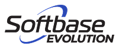

테스트 자동화
티벨은 업무 효율성 증대 및 서비스 신뢰성 향상을 위해 테스트 자동화를 지원해 드립니다. BDD 기반 테스트 자동화로 비즈니스 인력의 폭넓은 참여와 개발팀과 운영 팀 간의 원활한 의사 소통을 통해 생산성 증대를 약속 드립니다.
티벨은 업무 효율성 증대 및 서비스 신뢰성 향상을 위해 테스트 자동화를 지원해 드립니다. BDD 기반 테스트 자동화로 비즈니스 인력의 폭넓은 참여와 개발팀과 운영 팀 간의 원활한 의사 소통을 통해 생산성 증대를 약속 드립니다.
사람이 수동으로 반복하던 소프트웨어 테스트 과정을 전용 도구나 스크립트로 자동 실행하고,
실제 결과와 예상 결과가 일치하는지 비교·검증하는 기술입니다.
Test Script
시나리오 작성
Auto Run
자동 실행
Compare
예상 결과 · 실제 결과
Report
결과 리포트
로그인, 결제, 회원가입처럼 매번 반복되는 회귀 테스트를 사람 대신 자동으로 수행합니다.
배포 주기가 빠른 환경에서도 야간이나 주말에 테스트를 돌려 검증 결과를 바로 확인합니다.
다양한 브라우저·운영체제·모바일 기기 조합과 대량의 데이터를 한 번에 검증합니다.
TBELL은 고객사 요구사항에 가장 적합한 테스트 자동화/프로세스를 최소비용(Open source)으로 구축/운영 가능하며, 전략적 파트너사로 Apptest AI, Tricentis,
Softbase, Symation, LGCNS와 협업하고 있어, 고객별 자동화 요건에 적합한 최적의 자동화 솔루션을 제안 및 파트너와 협업 구축하여 고객사의 IT품질수준을 제고함
| 솔루션 [회사] | Ptero, Stego | Tosca, Qtest | 3hand  | Checkmate | Perfect win | |
|---|---|---|---|---|---|---|
| 코딩 여부 | 코딩(javascript,python 등) | No코딩(개발자 불필요) | No 코딩(변경시 코딩) 영어버전 | 코딩(javascript 등) | 코딩(C#, javascript) | 코딩 |
| 기능 강점 | •고객 요구사항 분석 후, 오픈 소스 활용 개발 •개발비외 유지비용 없음 | •AI학습, 매우 높은 인식률 •시나리오 작성 매우쉬움 •단말 성능 측정 | •AI Vision인식률 높음 •통합테스트 관리(계획~) •RPA 구축 | •UI솔루션 인식률 높음 •통합단말(은행등) 강점 •RPA 구축 | •인식률 적정 •개발L/C 통합 품질관리 •RPA구축, 단말 성능측정 | •많은 화면에 대한 기능 및 대량 데이터 정합성 점검 |
| 적용 추천 채널 | 고객 인프라 활용 맞춤형 APP 및 WEB 자동화 강점 | App 및 증권 MTS 자동화 특히 강점 | 통합품질관리 강점, ERP 적용 강점 | UI솔루션 기술 기반 통합단말(C/S환경) 강점 | 통합 품질관리 강점, CICD연계 커스터마이징 | 차세대프로젝트 추진 시 대량 데이터/성능 검증 강점 |
모든 것을 자동화할 수는 없습니다. 변경이 잦지 않고 반복 빈도가 높은 핵심 플로우부터 자동화 대상으로 선정해야 합니다.
UI나 코드가 바뀔 때마다 테스트 스크립트도 함께 수정해야 합니다. 초기 설계 단계부터 유지보수를 고려하고, 지속적으로 관리할 인력을 함께 계획해야 합니다.


자주 반복되고 결과 판정이 명확한 테스트가 자동화에 적합합니다. 새로운 기능의 탐색이나 사용성 평가처럼 사람의 판단이 필요한 영역은 수동 테스트와 함께 운영하는 것이 효과적입니다.
BDD(행위 주도 개발) 시나리오는 업무 언어로 작성되어 기획·운영 인력도 테스트에 참여할 수 있고, 개발팀과 운영팀이 같은 시나리오를 기준으로 소통할 수 있습니다.
Apptest.ai Ptero·Stego처럼 코딩 없이 시나리오를 작성하는 솔루션이 있습니다. 환경과 목적에 맞춰 코딩 방식과 노코드 방식 중 적합한 방법을 제안합니다.
티벨은 오픈소스를 활용한 맞춤형 자동화를 직접 구축할 수 있어, 개발비 외에 별도의 솔루션 유지비용이 들지 않는 방식도 선택할 수 있습니다. 개발 흐름 전체에 연결하려면 TestOps 구축도 함께 보세요.